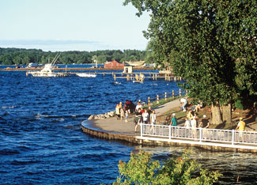

Traverse City could be thought of as the “pinkie” on the northern end of mitten-shaped lower Michigan. This self-proclaimed “Cherry Capital of the World” holds an annual festival attended by half a million people to celebrate the harvest of more than 300 million pounds of cherries. In 1987, Traverse citizens baked a cherry pie 17.5 feet in diameter - the world’s largest for a fleeting five years. The surrounding countryside, a bit reminiscent of Tuscany, also produces an abundance of grapes, and because of the tempering effects of Lake Michigan, the Grand Traverse Bay area has a relatively long growing season.
With voluntary support from Traverse City citizens who pay a premium for wind-generated energy, Traverse City Light & Power installed the first utility-scale wind turbine in Michigan - a huge machine that provides power to 110 homes and 15 businesses. A local business has now leased 40,000 acres in Michigan to harvest more of the state’s wind resources.
Outside magazine once named Traverse City one of the 10 best adventure hot spots in the United States, citing its world-class venues for sailing, kayaking, bicycling and skiing.
But this active small town also is rich in culture. In addition to the cherry festival, the town hosts the annual Traverse City Film Festival. Fifteen miles away, the Interlochen Center for the Arts hosts its biannual Arts Festival, a world-renowned celebration of music, dance, film, theater and writing. And we shouldn’t forget the town also has its own minor league baseball team, the Traverse City Beach Bums, who often make it to the Frontier League playoffs.
Population: 14,500
Median House Price: $169,900
Climate: Typical northern Michigan climate of cold winters and warm summers. January average: 15 degrees; July average: 58 degrees.
Natural Assets: Elevation: 600 feet. This recreational Mecca is a stone’s throw from Sleeping Bear Dunes National Lakeshore, with 35 miles of coast.
Sustainability Initiatives: Partnerships for Change, a quasi-governmental organization, seeks and funds projects that preserve natural and cultural resources.
Check out the other towns on our 2009 list of Great Places You’ve Never Heard Of.
|
 DAVE G. HOUSER/HOUSERSTOCK Film festivals, giant cherry pies and a love of outdoor sports make Traverse City a great place. |
|
|